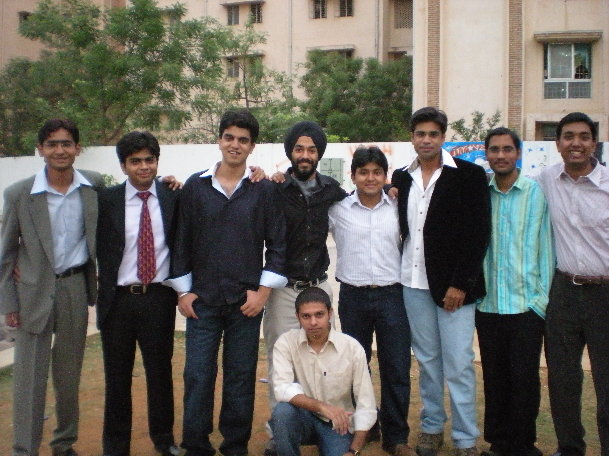
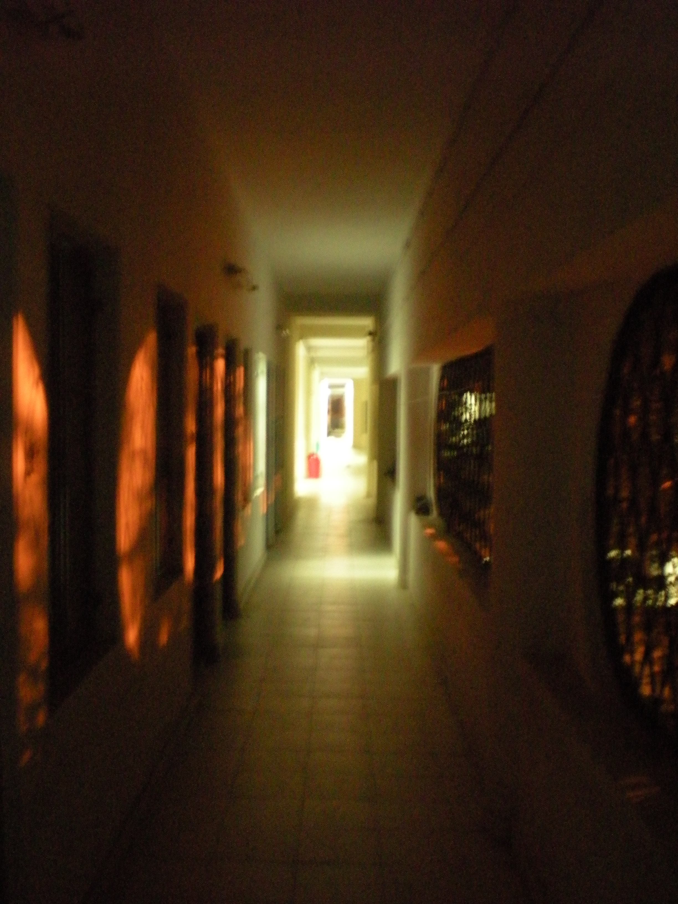
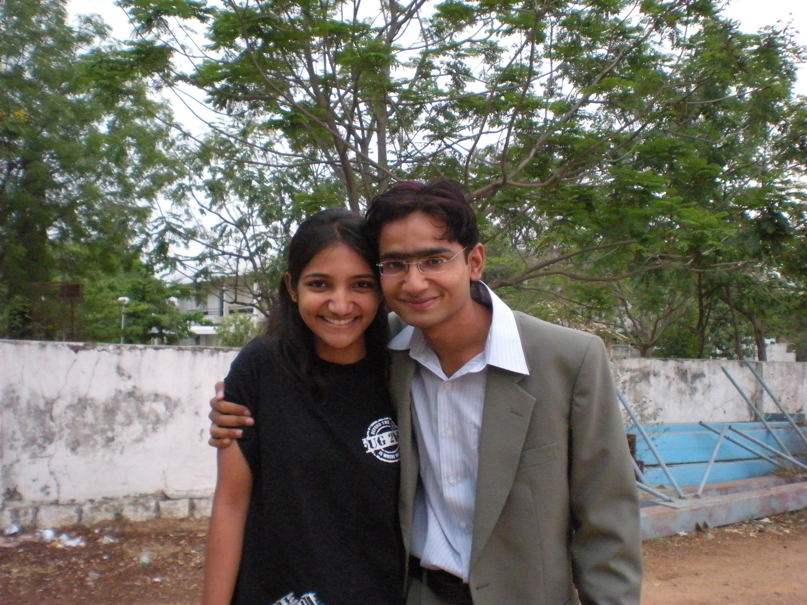

The Yearbook - Commemorating 2005-09!
Aniket Sharma's profile information
Name - Aniket SharmaBirthday - 18-01-1986
Email - aniket.tdsh@gmail.com
Address - D-3, MD Colony, Nakamadar, Ajmer, Raj
Phone - 0145-2670269
Webpage - Link
Hobbies - Writing, reading, trekking, running, BCing
WishList - Win at least one city Marathon, author at least one book, climb one of the ten tallest peaks.
Memorabilia - Lifting the overall sports shield, writing the Fraudbtech blog during placements
What would you want to be remembered as - I wish you would preserve me as I am now.
Future Plans - Trekking all over Arunachal Pradesh on foot and later making a book out of it.
Testimonials written to Aniket Sharma
Aniket Sharma's Album

{kind=link}
The gang

{kind=link}
Always as beautiful as this... OUR WING!

{kind=link}
Me and my darling sis
Testimonials
For Randeep Singh BangaBanga Sa'ab!
Look up to you in sooo many ways. "Thorough gentleman" is the phrase that always comes to my mind when I think of you.

You will make all of us proud. I know that.
Memories: My placement.
Tags: Bond, Social service, gentleman, M$
For Alok Kumar Gautam
Bihari Babu:
Alok is the probably the most affectionate person I have ever seen in my life. He absolutely adores his pals. Not only is he very helpful, but he never, ever minds anything they say or do. In fact, that behavior of his remains for almost anyone to some extent or the other. I absolutely adore him.
Bande ki kuchh limitations thi, jinke chalte ye apne mast maula nature se nahi jee saka. Ab vo toh hamesha hi rahengi dost. Jo mila, bahut mila. Humne group mein bahut BC ki hai, par individually nahi. Lekin maine kabhi is baat ko mind nahi kiya, aur zindagi mein kabhi bhi individually mere saath time spend karne ka chance mila, to jhijhakna mat. Ye kahaani yaheen se start hogi. Bahut saare achchhe log milte hain. Sabse utni dosti nahi ho paati, but if there is something they can do for you, they will do it. And given an opportunity, you will be friends with them. Aisa hi sochna mere baare mein, because that's what I think about you.
Chalo bhai. Dil se dua hai ki tumhe jald se jald tumhaari pasand ki ladki mil jaaye.
Memories: Your sweet and gritty nature.
10 years down the line I see you as: Married for > 7 years, leading a good, peaceful life.
Tags: Sweet, studious, group BC
For Prashasti Gupta
It was really nice of you to have thought about me on the last day of writing testimonials.
You're an admirable girl. Apni zyada kabhi dosti hui nahi, but uska reason I guess lack of opportunity hi tha, more than lack of anything. We meet so many good people in life, physically not possible to make friends with all of them. Bas yehi raha apne saath bhi. Not that I regret that or anything like that. Having sooo many good people like you around is one of the beauties of life.
I like the way you seem to handle so many things effortlessly. I have great respect for your scholarship. More than that, I have a respect for your athletic abilities. You were the first woman Sports Captain in IIIT. You thoroughly deserved that position. It was an honor to compete with you. I would always, always have respected whatever you might have said at that time, even if it were against our house.
All the best for life. I'm sure you'll do great.
Memories: Our first interaction, during play practice, in which you refused to give me Deepti and Namrata's phone nos. The dignity with which you handled yourself every time when there were excess of guys around, not everyone at the best of their behavior.
10 years down the line I see you as:An awesome Project Manager in Amazon or Google, PK's better half.
Tags: Girls, Sports, Vayu, athlete, co-sports captain.
Have a great life.
Peace.
For Prashasti Gupta
It was really nice of you to have thought about me on the last day of writing testimonials.
You're an admirable girl. Apni zyada kabhi dosti hui nahi, but uska reason I guess lack of opportunity hi tha, more than lack of anything. We meet so many good people in life, physically not possible to make friends with all of them. Bas yehi raha apne saath bhi. Not that I regret that or anything like that. Having sooo many good people like you around is one of the beauties of life.
I like the way you seem to handle so many things effortlessly. I have great respect for your scholarship. More than that, I have a respect for your athletic abilities. You were the first woman Sports Captain in IIIT. It was an honor to compete with you. I would always, always have respected whatever you might have said at that time, even if it were against our house.
All the best for life. I'm sure you'll do great.
Memories: Our first interaction, during play practice, in which you refuse to give me Deepti and Namrata's phone nos. The dignity with which you handled yourself every time when there were excess of guys around, not everyone at the best of their behavior.
Tags: Girls, Sports, Vayu, athlete, co-sports captain.
Have a great life.
Peace.
For Saurabh Sharma
Saurabh Sharma:
Saurabh bahut hi passionate banda hai. Ya kahen ki emotional, aur excitable. BLN ke office mein isne jo bakarchodi ki thi, vo aaj tak main bhool nahi sakta. Bahut saare kaandon mein ek saath rahe. Bade maje kiye hain ek saath. Ab ginaa nahi sakta, vo 244 NBH ki mastiyon se le ke Farewell treat mein saath jaane tak.
He's a decent cricketer, but after coming to college he developed a liking for football, which slowly got converted to a passion for Liverpool. This guy's freakish about all things Liverpool, and Gerrard is his idol. I can never forget your reactions during football matches, especially the Liverpool ones. I developed a liking for watching football only of late. Pehle hui hoti to aur bhi achchha time saath mein raha hota. Ours is the football wing after all. Khair...
He is often misjudged for his reactions. But in reality, Saurabh is an extremely intelligent, well-informed person who knows a lot not only about football, but about other things as well. Jayanthy Lal hai, Jayanthy ke under MS kar raha hai, which is a big deal in itself. Padhai mein slowly kaafi improve kiya hai isne apne aap ko. Thoda react jaldi kar jaata hai, is se log bura maan jaate hain. But banda dil ka bahut saaf hai. Saraswat ki chaahe jitni bhi mar leta ho, but I know ki ye dono kitne pakke dost hain. Kitni hi raatein goti-goti khel ke nikaali hain. A total gaming freak he is, and very good at it, too.News etc se bhi kaafi updated rehta hai, and has strong views about things, which shows that he does live outside his PC.
Tumhaari bandiyon se ghanton ghanto tak sporadic phone pe baat mere liye mystery hi rahegi. Kabhi saath baith ke discuss karenge isko bhi.
Dost react thoda kam karo, to vahi energy aur bhi achchhe kaamon mein lagegi. Aur baaki apan to yaheen hain... All the best for your MS

Tags: Group, wing, dilli, CVIT.
For Rahul Jain
Part 2
Jain ke aur mere interest bahut kam hi milte the. Gaming, CVIT, veg food, choice of courses, social life, har front pe interests different the. Main wing mein raha bhi kam. Phir bhi dosti ki feeling kam nahi hui, full credits goes to him for dealing with a lousy fuck like me. Many times I felt that I'm not being good to him. I sincerely regret if I ever came across as such. You've always been there for me, and will always be one person I can always count on.
Can never forget the time we spent together.
10 years down the line I see you as: Running your own financial enterprise.
Memory:/b> Jab tu faltu mein guard wale case mein fas gaya tha, and then scuffle case se tujhe nikaal liya tha, Haraam ki Baggi

Tags: Group, wing.
For Rahul Jain
Jain and I go a long way back. Back when GHEB was GHEB, and not a part of GH. We would study together at the last moment for the first semester exams, and he would always get more marks than me. Times changed, but we remained together, through people, groups, wings and hostels. Jain has always been there for me, without once complaining.
About him, he's a total BOND. Problem solving comes naturally to him. I was amazed at the way it did the first time we discussed a problem. And it has been so ever since. Jain, despite the kind of totally freaked out lifestyle we lead, still has a good CG and knows a lot of things. Doing MS under Jaws, by choice.
Halaanki mauka miley toh aaj hi Jaws ko finger dikha ke bhaag jaaye
Jain kai maamlon mein wing ki jaan raha hai. Jab bhi kabhi khud ne padh lia to sabko bataaya zaroor hai. Ye baat aur hai ki padha khud last moment pe hi. Gaming, movies etc mein poora poora sath. Saath mein khoob movies, outings ki hain. Baahar walo ke liye Jain mystery bana raha, but we all know about his ideas. I never cease to be surprised that someone hailing from such a totally business family is keen on studying so much. Speaks volumes about the family. Hum Jain ko chidhaate rahe kanjoos bol bol ke, but actually he has never failed to help anyone jab bhi zaroorat padi ho kisi ko paise ki. Haan, khaane ke maamle mein thoda kanjoos zaroor hai. Room mein rakhta hai samaan, aur hamesha apne haath se hi deta hai
For Yogesh Prakash Nautiyal
Nauty.
Garhwali. Bahut hi quiet sa banda hai, and very well built too. Jab main is se mila, to mujhe bahut saari ummeedein bandh gayi thi... ki ye banda bhi mere type ka hoga. Iske gaon ja ke haseen vaadion mein kho jayenge aur vahaan ke culture ko dekhenge etc etc. But later I realized that this Pahari, who can also start looking like a mountain ox on a week of gymming, is not at all adventurous by nature. This incidence taught me a few lessons about individuality in life.
Nauty has been a really hardworking guy. He has made a lot of sacrifices for his studies, something I truly admire him for. His skills I was able to see during the course of a Graphics assignment I took his help for, and I have respected his acads after that. So much so that when I got placed earlier than him, I felt as if I had somehow cheated him and a few others like him of their jobs. Survivor's guilt. Dude, you have no idea how much of a relief it was for me when you got placed.
A nice sketcher, he also appreciates art. I had one poetry reading session with him and was amazaed at how quickly he caught the essence of the poems - something I always have difficulty doing. I wish we saw more sketches from you.
We have something in common - a burning desire to see more of the world. You can count on me to try my best to accomodate a trip, anytime. All the best for your future. I'm sure you will make all of us proud.
Memories: Talking to you.
Tags: Garhwal, GHEB, Agni.
For Gaurank Khatri
Part 2
Iski chhoti chhoti baatein meri life ka aisa hissa ban chuki hain ki main bata nahi sakta. Pair ghisat ghisat ke chalta hua din mein 10 bar mere room ke saamne se nikal ke washroom mein ja ke mooh dhota hai. Din bhar wing mein BC. Kabhi kabhi katwaane ke baad bhi khud ko khush rakhna, bandion ke saamne thoda conscious ho ke impression marne ki koshish karna, exams ke pehle sab padh lena aur phir kehna ki nahi padha, ek hi gaane ko loop mein chala ke full volume pe kar room lock kar ke chale jaana... ye sab kaee khattee meethi baatein hain jo hamesha yaad rahengi. Koi shikayat nahi hai, aise bahut se kaam maine bhi kiye honge. Humne apni life ke chaar best saal ek doosre ke saath aise hi nikaale hain. I'll miss all of it. Always.
Ab aur kya bataoon, Yearbook ki deadline khatam hone aa gayi hai, pata nahi ye testimonial post bhi ho paaye ya nahi. IIIT ka time khatam ho gaya dost. Apne beech mein common baatein bahut kam hain, ya kahein ki hain hi nahi. Have quite different aims and ambitions in life. Isiliye mujhe lagta hai ki shayad hum log bahut zyada time tak ek saath na rahein. God knows. Phir bhi I can never forget you and the years we spent together, and whatever I become, you will always have a contribution to it. You will always remain my friend. May God always bless you in whatever you do.
Ten years down the line I see you as: An awesome wala Marketing Manager in a bigshot company, with an amazingly sexy wife.
Memories: Too many to write here.
Tags: Wing, group, BTP, kaands, BTech.
For Gaurank Khatri
Khatri
2nd sem mein dosti hui thi... Narang ka Dilli connection, aur tab se aaj tak har cheez mein ek hi saath rahe hain... Ek saath rooms liye 2nd, third aur fourth years mein, ek saath Disco, scuffle, daru kaand mein fasey, ek saath BTP kiya, ek saath courses le ke ek saath exams mein padhe, ek saath placements ke liye padhe aur ultimately ek ke baad ek interviews de ke, interviews mein ek doosre ko mention karte huye, ek hi company mein naukri paayi. Jitna saath main aur Khatri rahe hain BTech mein, utna shayad hi aur koi raha ho hamaare batch mein. Saath ke incidence isiliye main gina hi nahi raha. Itna padhne pe khud hi isko yaad aa jayega. Bhoolega thodi. Hamaare jitne kaand IIIT mein aaj tak shayad hi kisi ne kiye hon.
Banda zabardast witty hai. Aur har cheez mein kaam nikalwana jaanta hai. Kuchh bhi jugaad laga keta hai bakchodi kar kar ke. Iski wit ka bahut fayda mila hai. Itne saare rooms ek wing mein kabhi na milte. Kaheen bhi jaana ho, gaadi ka jugaad kar deta hai. BTP mein Venky ka kaatne mein bhi iski BC karne ki kala bahut kaam aayi. Awesome kirrak time nikla hai yaar saath mein.
A total Bollywood fan. Bollywood ki saari cheezein pata rehti hain isey, kaun si movie mein kisne kya kiya, kis scene min kya hua, sab kuchh. Hindi movies ka bahut bhayankar fan hai. Isiliye main English mein iska testimonial nahi likh raha.
Banda hamesha awesome cool rehta hai, par jab iski fat jaati hai, to mujhe pata chal hi jaata hai kitna bhi chhupaane ki ye koshish kar le. Hum dono ne ek doosre ki bahut gandi se gandi fataaye mein dekha hai. Aur actually hamaari kaafi time kisi na kisi baat ko le ke thodi bahut to fataaye mein rahi hai. Aajkal bhi hai. Offer letter aa hi nahi raha company se.
Iski chhoti chhoti baatein meri life ka aisa hissa ban chuki hain ki main bata nahi sakta. Pair ghisat ghisat ke chalta hua din mein 10 bar mere room ke saamne se nikal ke washroom mein ja ke mooh dhota hai. Din bhar wing mein BC. Kabhi kabhi katwaane ke baad bhi khud ko khush rakhna, bandion ke saamne thoda conscious ho ke impression marne ki koshish karna, exams ke pehle sab padh lena aur phir kehna ki nahi padha, ek hi gaane ko loop mein chala ke full volume pe kar room lock kar ke chale jaana... ye sab kaee khattee meethi baatein hain jo hamesha yaad rahengi. Koi shikayat nahi hai, aise bahut se kaam maine bhi kiye honge. Humne apni life ke chaar best
For Saket Kumar
This guy is a total chatting freak. At any time you visit him in his room in an isolated corner of OBH, he'll be busy chatting with around 20 girls of half a dozen nationalities. The countries he has his girlfriends in, beats my Geography. Also, a total movie and sitcom freak. You name a movie/ sitcom, and he has seen it. Also, a ferevish maggie eater and a fellow drinker and ....
Ganje se meri dosti 2nd sem mein Khatri aur Saurabh ke saath hui. Second year mein hum log bahut saath mein rahe. Ser, that was a very good time, when we ALL were together. Pata nahi ki tujhe realize hua ya nahi, par tere alag rehne ke decision se hamaare group mein se bahut kuchh kam ho gaya. Zindagi mein aur bahut kuchh jud jaata. We were all your friends, but for some reason you chose a faster net connection over us. All the same, I respect your decision. You must have given some thought to it.
I'll always wish that you live your life well. Any time you wanna do something on your own, or any time you wanna come forward to make a promise, I'll try to do my best for you. May God bless!
Memories: The time spent in your and Saraswat's shared room.
Tags: Group.
For Md Abdul Azeem
Azeem:
My first impression of Azeem was that of a total chutiya. A total non-stop masti karne wala bhangi. Jahan jaata, cheezein utha patak deta. Arbit bhasad machaata rehta. Isko dekh ke koi nahi keh sakta tha ki ye Aziz ka bhai hai. Shakal ek jaisi hai, but demeanor mein itna farak! Khair bahut jaldi hi isko iska tod mil gaya tha Ranjeet ke form mein. Dono ek saath mil ke bhasad machaate the, workspace mein aur English ki classes mein.
Ek bar Lappy aane ke baad itna khaas interaction hua nahi, aur 3rd year mein main wing mein raha hi kam. 4th year mein hum close aa gaye. We are die hard foodies. Chicken khaane ka isey bhi shauk hai, aur mujhe bhi. Ek saath hum dono ne bahut chicken khaaya, Hyderabad ki nayi nahi jagahon pe. Hamari dosti chicken pe hi bani, jo khaate khaate humne kaee baatein discuss ki aur ek doosre ko jaana. First year se ab tak isme bahut changes aa chuke hain. Kuchh toh maturity, aur kuchh gaming ke passion ne vo sense of humor kam kar diya hai, but I can always sense the naughtiness every now and then. I think I am one of the few people who have seen his serious side as well, and in a way I feel special to have had those discussion in the seven seaters, in restaurants, Biryani joints, different places. We discovered that we have similar backgrounds, and similar small town values. I see Hyderabad from a different eye when I am with him. In a way, he's brought me closer to this city.
Placement season was a tough one for us. You were the first person to have come to know about my offer. I was running a slight fever, and was sleeping in your room, and you were the first one to congratulate me. That moment will last forever.
Will also never forget the kicks you give in the name of birthday bumps. Ouch! Fucker.
Finally, one word of advice for you. Gaming is injurious to social skills. I think you could do with less gaming.
Aur baaki tera ghar to Hyderabad mein hi hai. Bangalore chala gaya, tab bhi milna apna hota hi rahega. All the best for life. May God bless!
Memory: The chicken we ate at Four Seasons during the placement season.
Tags: Chicken, wing, group.
For Srirang Ranjalkar
Jab bhi main isko dekhta hoon, ek bahut hi strong, positive, bubbling si vibe mujhe hit karti hai. Main andar se khush ho jaata hoon, aur mera dil kehta hai ki vaah! kya awesome banda hai!
Ranga aur main Agni mein ek saath the. Althought he lived in the Vayu section of the hostel, somehow he came into agni. And how it was good for us! Because in our Agni batch of 26 people, had there been no Ranga, we would probably have gone without participation in many inter house events. Ups came and downs came, but Ranga was always there for Agni, and by implication, me.

During placements there were a few people who managed to remain chilled out. Most of them were were like, those who had had startup plans and were just appearing for jobs as a backup. And then there were the miniscule minority, who were simply too much at peace with themselves and chilled out from within to let it get on to their nerves too much. They knew they will ultimately get a decent job, so why bother. Ranga fell into the latter category. Ser, haven't seen a more cool guy than him!
The period after placements has seen Ranga come of age. He had been the apple of every eye since the first year itself, being a multi cultures and multi lingual person and all, but now, with no worry on his head at all, he's like, unleashed his animal spirits on the whole batch! No joke, no party is ever complete without DJ Ranga's effusive DJ spirit filling the place with positive vibes. He has unleashed his artistic creativity everywhere, be it singing, dancing on chairs in the audience, writing rap numbers, clicking pics and getting pics clicked, or simply playing some prank or the other on his gang.
If I could ever get inside his head, I would like to know from where comes so much positivity, so much goodwill, so much wit and so much simplicity. Whenever he laughs, it's like you can see his soul through it. It'll be interesting to know whether he holds some sneaky, underhanded thought inside him or not. It really, really looks all clean and pure to me.
One more word, he's damn intelligent. Just more chilled out than intelligent.
Fav Memories: Reading for Soft Computing, the various Agni activities.
Will remember you for: The DJ spirit.
Cheers!
For Satyanarayana Koneru
That Satya is a destructive CZ player who kills off people in no time comes as a big surprise. You won't believe it when you go on his looks, for Satya is the most gentle, genial looking person, with the most harmless expression on his face that you can ever see on anyone's. But look at him playing his cricket, and then the CZ abilities look more credulous. Because he has such sharp reflexes! The shots he hits are outstanding. What people have forgotten is the throwing events on the sports days. He took the gold medal in Shot Put for two consecutive years. And in the third year, when he saw Prudhvi surpassing him, he came up with his best throw in his second attempt, despite having a side strain on that day!
Was always a dependable batsman, and in our third year, when he would ask me about our house, I could see the house spirit burning inside him, and since he speaks so less, and doesn't show unnecessary enthu, it was a great inspiration for me to go on with the house affairs.
Really do not know him apart from his sports activities, as he prefers to speak less, but he comes across as a thorough gentleman with impeccable manners. Cheers to you dude and all the very best for life!
Person you remind me of: Inzamam-ul-Haq
Fav memory: You hitting Manish Jha for that majestic square cut in the final in inter batch third year. That was the shot which Sanket referred to, in his Farewell Speech. Will always remember that shot.
Cheers
For Ranjeet Singh
My first friend inside IIIT. Aur maine us din se pehle tak sardaron ke baare mein jitna aur jo kuchh bhi suna tha, us sab ka super set. Banda ragging time mein kya kya gaaliyaan nikaalta tha, aur Dharmeet ki kaise marta tha aa ke. Zabardast witty. Saamne 100 log khade ho, aur yahaan ek ho to bhi is se jeet nahi sakte. I remember the time jab hum cellar walo ki marte the, khidki mein se, raat ko walk karte huye. Doston ka dost, aur maaki sabki g**** mein Danda, aisa attitide rehta tha. Carefree aur bindaaspane ki ek nayi hadh. Kabhi kuchh paise ka hisab kiya hi nahi, GH ki chhat pe bomb phode, Vivek Prakash, Ojasvi aur Tenany ki le le ke paagal kar diya unhe. Jungle ghoome, sadakein naap leen, aur na jaane kya kya nahi kiya. iske saath rehte mujhe aisa lagta tha ki main duniya ke raaja ke saath chal raha hoon. Dost, agar poori BTech mein vaise hi saath reh paate, to shayad meri BTech kuchh aur tarah se poori hoti.
Bhayankar intelligent banda hai, par aajkal lite leta hai. Badhiya hai, jo bhi maharaj ko achchha lagey. Aajkal shabad keertan mein rehta hai, gaaliyaan nahi nikaalta, but iski naughtiness mujhse chhup nahi sakti. Dil se to vaisa hi, pehle din wala, formidable Ranjeet hi hai. Apna milna laga rahega bhai. Us tarah ki dosti meri phir kisi se nahi hui.
Will miss you for: The wit and the warmth.
You remind me of: The rustic villages of Punjab.
You will always remain: The first friend I made in IIIT.
For Prashant Mathur
Contd.
But beyond all these quirks, I know Mathur as a very friendly guy. Kitni bhi mar lo iski, banda kabhi dil se bura nahi maanta. Iske matlab yehi hai ki banda samajh jaata hai ki saamne wala hurt karne ke liye nahi mar raha. Maybe isiliye sab jageh iski dosti hai. TT aur CZ ka deewana. Khelta bhi mast hai. Iske saath kai bar ghar gaya hoon train mein, aur Ajmer mein bhi saath ghoome hain. Lagta hai ki bilkul hi timepass banda hoga, par LTRC mein MS bhi kar raha hai. Badhiya!
Lagey raho Mathura. Apan to milte hi rahenge. Yahaan vahaan kaheen bhi
All the best for your life!
Memories: The train journies, scuffle, bumps
For Prashant Mathur
Part 1
Banda 6-foot lamba hai, aur mere jitna patla hai. The most flatchested guy I've ever see, but fir bhi thodi si tond nikili hui thi bande ki ek time pe atleast. Poora safed aur transparent complexion hai, aur zaraa sa joke mar do, ya kuchh kar do to banda literally poora lal peela ho jaata hai.
Bande ki ungaliyaan itni lambi hain ki banda ek ungli mein poora glass pakad sakta hai. A mangy stubble around the mouth is all that he grows for a beard. Chashme ko naak pe thoda sa slide kara ke, uske oopar se dekhta hai, aur daant nikaal ke hehe kar ke hasta hai. Ek chutiki sabzi ke saath 6 rotiyaan kha leta hai, ghee aur cheeni laga laga ke...
Ab mujhe itna hi pata hai, baaki iski girlfriend jaane
but I guess I can safely say that based on physical characteristics alone, he's the strangest person I have ever come across.
Ab ye to sab oopar ki baatein hain... jahaan bhi kaheen kisi ko bumps pad rahe ho, to banda pahuch jaata hai aur uski ma behen sab ek kar deta hai. You would think that he's getting paid to kick that poor ass

Aur agar koi isko bumps dene ki koshish kare, to gusse ke maare laal peela ho ke kursi utha leta hai
Banda poora heera hai. Ab aur kya bataayein... ladai mat kar lena isse, baal vaal kheech ke ganja kar dega tumhe
... Aur agar kabhi 3 ke group mein se 2 ko police wale ne pakad ke loot liya, to us loot ke paise ye teesre se bhi nikalwayega.
Par banda hai mast. Kabhi kabhi iska dimaag satak jaata hai to public place pe gaali dena start kar sakta hai... bina parwah kiye ki paas mein kaise log khade hain...
contd.
For Himank Sharma
Part 2
Whenever I get nostalgic about our college times, your blog will be one thing I'll be referring to. Didn't like it at first, but now I think it totally reflects our daily lives at the college, and I am in love with it now.
Kudos to you. I can never forget you and let's hope we keep seeing more of each other in the future!
Fav. Memory: The two incidences described above, reading and commenting on your blog.
Nickname for you: Bhaloooo!

For Himank Sharma
Bhaloo Bhaiya!
Kaya gazab ka banda hai. Ekdum bindaas! Matlab jitna hona chahiye utna. BC, BC and more BC. Not just in terms of time, but in terms of intensity, too. Ek saath 4-5 type ki BC. Ek blog likhte huye, el blogs padthe huye, 3-4 logon se chat karte huye, aur 3-4 logon se baatein karte huye... add to that ki koi badhiya sa Beatles baj raha ho... sab ka sab ek saath. Bhayanak wala BCbaaj aadmi hai bhai. Add to that ki he's one of the hardest drinkers of the batch, one of the biggest suttebaaj, Farewell par bhi shave na karne wala, and the one guy jo ki apne room mein alarm baja ke poori wing ko jaga de, par khud na jagey
... and you get the picture.
Of course you cannot judge merely on these things, for Himank is also one of the sharpest and the most energetic guys I have ever seen. Look at his academic and other achievements. First year mein Workspace mein awesome coding karta tha bhai! Fat leti thi. He's also a big fan of Hindi like me, and a fellow blogger and we also share similar musical tastes. We also share some similar funde about life - Both long for the shaant, peaceful types life, something which is difficult to get in the line we have chosen to be in. He has a good circle among the fairer sex, too, so that must mean that he knows how to behave himself properly, although I see few examples of that in our daily interaction together
Have been in a few incidences with him that fall outside the purview of the daily discussion and BC. I can never, ever forget the time when the four if us reached some other place from his room. It was the first time for him, and the absolute drama he did after that, well, I would pay a thousand bucks to see such drama again
 Another was this Felicity '09 Rock show, when we devised the famous Law of ours. Of course the others won't understand, they can never reach our heights after all! The time during Placements and CAT also, we were together. Indelible memories those are...
Another was this Felicity '09 Rock show, when we devised the famous Law of ours. Of course the others won't understand, they can never reach our heights after all! The time during Placements and CAT also, we were together. Indelible memories those are...
contd.
For Kishore Pudi
From downloading to volunteering to carrying the entire PEC on his own broad shoulders, to providing entertainment to his wingamates... Pudi does it all. Such a sweet guy, always spreading smiles wherever he goes. Love you man!
You've been very understated. I remember you doing all the PEC work in second year without holding a position. You have worked more than most people for the PEC, no, for the entire college, and yet your name wasn't there for any of the awards. I felt disappointed. It's a loss of the award that Pudi didn't get any. But you know that the whole college loves you for what you do for us.
You have your ideal job. I can't remember a more ideal job for Pudi than designing and running things which would teach young children. The world needs more people like you. All the best!
Memories: Seeing
Message for you: Don't put on more weight.
For Abhinav Mehta
Have sooo many memories of you from the first year. Himank and Karan have said it all. You were the one who everyone loved.
People loved you for many things. But then you decided to change. Why and how, I choose not to question. It must have been in your best interest, and must have taken some guts and gumption.
It was a pleasant surprise to see you dancing with us in Felicity '09, Mohit Chauhan nite. You were always welcome to join us, and it was nice when you did.
You seem to be very much into research. Good for you, and I must say good for everyone. May God Bless!
Fav. Memories: Our first interactions with Prof. Sangal and Mitra in 1st year, your dance for Mr. Freshers' talent round.
For anjaneya srinivas
This little, extremely gentle, soft spoken guy has sat behind me in sooo many courses. We almost did our entire BTech sitting together. I don't know why we never really got to know each other very well personally.
But one thing is for sure, Srinivas. I owe atleast some part of my miniscule CGPA to you. And I'll always, always remember you for that.
Writing your testimonial makes this whole exercise of writing testimonials look very complete and meaningful to me. All the exams that we wrote in IIIT, all the courses we sat and slept through together are are flashing before my eyes as I write this.
I had always wanted to say all this, but could never get myself to it. Thanks for being there for me on so many occasions. I hope I can do something for you some day. And I know that that would be a worthier occasion.
Will remember you for: The major part of our BTech that we sat together.
Message for you:/b> Keep Smiling
For Abhijeet Pagare
When I first met him, I thought he was just like me, and that we would make great friends. He was the one I wrote a description for in Mrs. Marathe's A1 class. We were the very first drinkers of the batch. Somehow never really had the chance to interact with him much, and later on I realized that we didn't have that much in common after all
Nice guy, who comes across as one who knows what he wants from life and has his priorities set. Very sharp, too. I'll always remember you for the interactions we had in the very first and the very last segments of our B.Tech.
Memories: Some of the drinking sessions, the one and only Sports Committee meeting.
10 years down the line I see you as: A high flying, wine sipping executive with a large social circle.
Cheers!
For kharkwalg
English courses and the blogosphere, that's why we interacted the most. Stumps everyone with his command of English. There are several facets of his well-honed personality.
Does what he likes, knows what he wants and has the ability to pull it off. The decision to go for the PhD in Psychology after B.Tech. sums it all up.
Comes across as one with a devil-may-care, no-nonsense attitude, but we all know that beneath that, he's just like any of us.
All the bestfor your future Geekay. And as we discussed earlier, if and when you do achieve something in life, you won't be the only person in the batch to be proud of that.
For Raman Jain
Raman, another guy who came with me from Ajmer. Was my room partner for the first day, aur pehle hi din meri maarne ka jo silsila isne start kiya, vo aaj tak chala aa raha hai
Kitni hi BC ki hai is se Ajmer ke baare mein. Isko Ajmer mein main Raman Bhaiya kehta tha. Kaun maanega bhala is baat ko, par ye sach hai. Ajmer mein hamara thoda common friend circle hai, aur mujhe jab bhi kabhi updates chahiye ho, to Raman Bhai hamesha haazir. In fact, iske bina Ajmer ke us part se mera rishta shayad chhoot sa gaya hota.
Iske baare mein ek quality bahut unique hai. Vo ye ki iske chehra sheesha hai. Tum aar paar dekh sakte ho. Gussa, fatna, hansi, chutiyaapa, frustrations, khushi, sab ki sab chehre pe ekdum awesome tareeke se dikhti hai aur express ho jaati hai. Aut thodi der baad uski jageh doosra emotion le leta hai. One minute he's discussing some fodu plans wth his blood brother, and just the next moment he'd start venting out his frustration over Jaws. Bahut jaldi emotions change hote hain. Aisa banda maine aaj tak nahi dekha.
Raman poora comedy machine hai. Jahaan ye hota hai, comedy apne aap barasti hai. He's a natural at it. Jitne kisse iske sune hain, utne shayad kisi aur ke naheen sune honge.
Par kaam ke maamle mein banda heera hai. Hats off to the sharp mind and the hard work and determination with which you must be working in order to do so well under Jaws. And your english is just fine, nothing wrong with it. Improve karna hai to dheere dheere ho jayega, koi badi baat thodi hai. Aur baaki emotions to theek hain, but gussa thoda suppress kar lia karo.
Do well in your MS. I'm sure it won't take long. All the best for life!
Memories: The one day we were room partners for. And then Vipul revealing 'the' secret in final year.
Person you resemble: None. Raman is unique.
Tags: Ajmer, TA, CVIT, awesome.
For Atul Dwivedi
One less-known fact about him: He still doesn't know the very basics of guitar playing. But ah, what the heck! Seekh lega.
For Amit
Part 2
Lots of people makes fun of your doubts and I am no exception, but long back I concluded that they're nothing but a bit extra effort to learn more. Anyways you had better decide for yourself.
Have fun. Yaheen Hyderabad mein rahenge. Milte rahenge.
Gut feeling for you: You'll get married pretty soon.
Memories: Kabra ki katli hansi.
Tags: Ajmer, TA, CSE, football, doubts
For Amit
Part 1
Reading Kabra's testimonial was a pleasant surprise for me... he mentions that there are certain qualities in me that he admires. It's nice to read that, because Kabra is a good fella and it's nice to receive compliments from him.
I've known Kabra for five years now. We were in the same coaching in Ajmer. So I'll start my testimonial from there only. And make no mistake, Kabra had a reputation quite similar to what he has in IIIT - that of a person who asks a lot of doubts. But at the same time, everyone admired his hardworking nature. Things progressed and we both got admission to IIIT. And Kabra's legacy continued. He's still managed to retain the inquisitiveness in him.
Like others have written, even I sometimes feel that his doubts become a bit too much at times. I think you should take some time out to analyse the issue on your own. But I really admire the spirit behind it - to continuously improve oneself and the determination and grit to carry on without caring about the world laughing at you.
The spirit shows in every aspect of Kabra's personality. Came here after two year drops. And once he was here, his CG has consistently improved. A very good student indeed. Company after company rejected him, but he persevered on. And after placements when people usually take a chill pill, this guy still kept on applying for companies. Nothing short of the best will satisfy him, it seems. Badhiya hai, keep up the same spirit buddy. Bahut aage jaana hai abhi.
Baatein bahut si hain... Ajmer ki aur IIIT ki bhi. Kabra ka cycle pe ghar jaana, uski moochhein, ragging period, saath mein football khelna, jageh jageh bc aur discussions karna, CAT period - one time jab ki main Kabra ki thodi help kar saka, placements... jab ki main kehna chahta raha ki buddy maybe you're trying a bit too hard, but then decided against it.
contd.
For Manish Sharma
Banda heera hai heera. I've always maintained that he's one of the most adored guys of the batch, right from the time he christened hiself as 'Mux' or 'Mux faltu'. Ver helpful and has a heart of Gold. Last year bande ne farewell mein bahu help ki thi. Because of him, we have the Juniorbook so up and running.
He has the knack of cooking up comedy from any circumstances. The way he smiles that naughty smile of his, would make you smile too. If not with him, then at him. But this is why we say that Mux is the best. Bande ki kitni bhi le lo, as long as you don't mean any harm, he's always very sporty and ready to spread smiles around.
He's always on the lookout of improving himself. Banda english awesome bolne laga hai, aur blogging bhi achchhi karta hai. Very hard-working when it comes to acads. I've seen him rise from being any other sixpointer in the first year to doing MS under Jawahar (ye baat aur hai ki baad mein BEza pasand aa gaya). But most importantly, Banda dil ka awesome hai. Hamesha sabe prem se baat karta hai. Sabko khush dekhna chahta hai.
I'll remember the discussions we've had. It's fun to talk to someone so intent on listening. I adore you, and you know that if there's anything, I'll always be there for you.
Memories: You dancing in the Cult nite '09.
Person you resemble: Mux is unique.
For Spandana
She was with me in the english classes. Didn't used to say much, and I never bothered her, thinking maybe she was too conservative and all. We participated in the Rangoli contest in the first year and took the first prize
Also, she was one of the people who I interviewed in my first year for the article on JV and I was amazed at how candid she was in expressing her opinions. But well, I never did talk to many of my batch girls, till the final semester. Course after course passed by, with Spandana only coming in at the last moment to sit beside Khatri and would give the attendance and walk away. I don't even think we passed as much as a smile to each other. But yeah, we did used to leofy Khatri a lot after her.
One fine day, in the final semester, the two of us alongwith Dharmeet went to the old age home in Kukatpally. That trip itself changed a lot in me. Besides other things, I also talked to Spandana for the first time, and I was amazed at how completely candid a person she was. Talked about a lot of things. Hat's off to her for going to school 30 km from her home to attend classes. I wouldn't do that for the life of me.
After that, I somehow felt like I should never join in the leofying of Khatri we do in her name. And I've stuck to it, more or less. Have interacted with you a few times since then, and you always come across as an innocent person without many inhibitions. It's a thing I admire in people. There aren't many like that.
We somehow always talk as if we're very good friends, or have made a pact to become very good friends. I like that a lot. I hope we work together in BoA and have fun. And any time you want a tree to be climbed or any mangoes to be picked, you have my number
Memories: Interviewing you in the first year, picking mangoes.
Tags: Girls, Samvedana, BoA, 8th sem.
For Bharat Sankhlecha
Part 2
...He is really skilled at his field and it was terribly disappointing to see company after company not appreciating his expertise. But all's well that ends well, and I'm really happy for you for your job in LPU. I hope you remain in the teaching field, as I think you already have made a good teacher. Also, I can't imagine you living the typical city life in such big cities. I think the peaceful environment of a small town university campus will suit you just fine, and I'm very happy for your placement.
Stay in touch. Kabhi bhi Jammu side aaya toh LPU aa ke zaroor visit karoonga
Memories: The patience with which you solved people's problems.
Message: Bhai kabhi mess mein bhi kha lia karo.
In ten years' time, I'll see you as: Prof. Bharat Sankhlecha.
Tags: Roomie, ECE, laptops, LPU.
For Bharat Sankhlecha
Part 1
Bharat, my room partner in 2nd year. The only person I have ever shared a room with. And in fact, I am the only person he has shared a room with. And the two of us have been living in hostels for the past seven years now. Wow! it was nice to have noticed that in our final moments of B.Tech.
Bharat bahut hi shaant kisim ka helpful sa banda hai. For whatever time I was there, juniors always kept thronging our room to meet up with Bharat sir, the robotics expert. He has a queer walk, and some times I used to get the impression that he himself has become a robot, so much he was into robotics.
He wasn't very good at reading, but had exceptional interest in 'doing' work. Extremely dedicated to his subject, he has been one of the premier ECE lab TAs from our batch. He has a special interest in the practical aspects of Electronics, and is nice enough to help anyone with any laptop problems. He just told me today that he had opened about 50-60 laptops in IIIT. Hats off for all this you keep doing for us, Bharatiya
Up personal, he comes across as a person who likes his space. He lives in NBH, away from the hullabaloo of the batch. Kept the room cleaner than me, and never once complained, although I must have done some chutiyaapa or the other. In fact, I did used to play the guitar in his room, but then too he never complained. Because of the fact that he had Thakurjee in his almirah, I never smoked in his presence, and made it look like I never did. But you know that there were times that I did. 5-7 times, maybe. Yaad nahi.
contd.
For Kabeer Singh
Individualism of such extent also might get exasperating for others. It's just not in his nature to accept something just because you're telling him, and he will always verify, cross check things, so much so that you'd hang up your hands in frustration, 'bhai, kabhi to meri baat maan le!' His choices are so clearcut - attaches only to football and basketball. The room has to be kept clean always. The Hindu is the good newspaper. FMS exam over Verizon and Azri. No hindi songs on the Hard disk. No drinking, no smoking. No polluting the mind by using unfair means. No unnecessary frills about anything. No unnecessary emotions...
It's been a good time with him, and we've really been pals. Quite a unique character, with some commendable uniquenesses. Not many similarities we have, but it's a case of opposites attracting. Has been with me through thick and thin, and that in itself is something commendable. I wish you the best for whatever you do Kabeera. One thing I can clearly see - whether you succeed in something or not, it is you who will own the result.
Little known fact about him: He's an awesome dancer.
Person he resembles: Thierre Henry.
In ten years I see him as: A phodu analyst with a small/ startup company, who takes his kid to football coaching everyday.
Memory: The chicken outings.
Tags: Wing, football, athletics, CAT.
23rd April, 2009
For Kabeer Singh
Part 2
Everyone knows Kabeer to be this awesome football player, and I am no exception. He's the Henry of IIIT, scored the maximum number of goals scored by anyone in IIIT, and from all possible angles. The quintessential striker, and the nightmare of defenders. Also an amazing athlete and runs very fast. It looks as if being at the helm of affairs on the field is in his nature. Strikes in football, shoots in basketball. Runs fast. Activities central to the game done so marvelously. And with complete sportsmanspirit. I've never ever seen him get angry on the field in all these years.
Living together for so long, I can ably put a word or two about Kabeer the person. He's very intelligent, sincered and dedicated to his work. These are qualities normally associated with people having high CGPA, and do not get reflected in his academic achievements. But there are other things too. He's an individualist and an objective thinker. Does whatever suits him to the extreme, and other things then do not exist for him, no matter if they're the life of all the others beside him. CSE unfortunately didn't interest him, so he didn't study. As simple as that. Football and basketball have, so he has done well in them. He liked CN, and did so well as to become a TA in the course despite his low CG. MBA studies fascinate him. He'll do very well in his MBA programme.
Such crisp and precise thinking, taking all your decisions yourself and not taking anything at face value can have reverses, too, as sometimes the crowd might be the one making the wiser decisions. But then I suppose its one's own choice. You take your own decisions, and accept the mistakes that come along. I've never seen Kabeer getting senti about anything, despite facing such tough times in the final sem, and this is something commendable.
(contd.)
For Kabeer Singh
Part 1
The very first day, I came to know that one of my batchmates had refused to honour the 'Dress Code' set by the seniors. Then later I saw Kabeer in TShirt and Slacks near the basketball court, and I was like, wow! This guy sure has attitude! A few days later, he was the guy leading the pack during the PT 4 rounds alongwith me and Mahaveer, to whom the PED would say, 'Sardarji thoda dheere bhaago'. And then, the very first time we played football together, which tured out to be my one and only chance in Gachibowli Stadium, Kabeer scored a goal against the then college team, comprising of some real stalwarts when he was backed by total novices like myself.
We started off during the football matches. He's since been a part of whatever football I've played in IIIT. He used to live in the cellar and I in GHEB and we had little interaction outside the field. I think it was in second year, or maybe the third, that we used to play, and then go out and eat, and have discussions about the economy en route. Whatever I ate was seldom enough for me, and I used to feel really short on stamina after football. But Kabeer used to eat very little and still remain high on stamina the whole time, something which would amaze me no end.
In third year, we started living in the same wing, and that was the time we came to know each other really well. Third year mein he was the co-sports captain, someone to whom I attribute the really clean conduct of the sports matches, and hats off to his scruples for that.
I think in the final year we've come really close, preparing for CAT together, and then sharing the placement blues together for some time. The amount of time I've spent in the wing has been substantial this year, and the masti we do in the wing, of which Kabeer is always a part, is to be given credit.
(contd)
For Deepti
You forego a lucrative career in the US, in exchange for the dirt of Hyderabad. A decision which wouldn't particularly enthuse on first look anyone for whom you are the center of the universe. You then carry on with your idea. You swim against the the tide, something which is more strenous on your shoulders than swimming with it. Your life becomes a whirlpool of activity, when you were used to living in peace and quiet earlier. You make the humongous extra effort and end up with lot less money, lot less comfort, lot less leisure.
So why do you do it?
I bow to you Deepti, for the fact that you made me ask this question.
I bow to you, for the answer you would give to this question.
I've seen you but these three months. But you're tops in the list of the people who make me feel proud of my batch. You have unknowingly affected my, and several lives in unprecedented ways. Hope to be able to walk some distance with you, and this Deepti, which took this amazing step of starting Samvedana, will always remain an inspiration.
Fav Memory: Flirting with you on the photo session day.
Person you resemble: Mother Teresa
10 years down the line I see you as: An iron lady who has already spread a million smiles around.
23rd April, 2009
For Akash Agrawal
Tags: ECE, Yuktahaar, GHEB, Hindi course, Mathura.
For Akash Agrawal
Aakash, one of the ever-working ECE people in our batch.
We lived on the same floor in GHEB in the first year, and my very first few outings were with this group. How different those days were! He had known some programming since before, as far as I remember, but by any standards, he was a very sharp coder. I was sure that he will change his branch to CSE. That never happened but still during placements, he started acing all the CS companies' written exams right from day 2
I'm happy for you that you have a nice job in a CS-related company now
I knew him better only in the 4th year, during the Hindi course, when we used to disagree with Laltu sir's ideology. Since then, we're eating in Yuktahaar together almost everyday. His resilience was on ample display during the placement season, when company after CSE company rejected him, apparently for being an ECE guy, when his strengths lay at CSE. That must have been one trying period, and could have been unnerving for anyone. Kudos to you for navigating through it so beautifully
A gentleman, hard-working and sincere, that's how I know him. Cheers to you and have a great life.
Memories: The awesome grading criteria in the Hindi Course in which we both got B-
For Shikha Aggarwal
Shikha, my classmate both in Bansal's, Kota and in IIIT. At that time I knew her as the girl with the peculiar high-pitched voice. Times have come and gone, aawaaz vahi rahi, but the girl preparing for IIT-JEE and coming to classes in IL School, Kota is going to be one of the select few people who get to join google.
Although I've known her for seven years, the major part of our interaction happened in the 4th year, in Bipin Sir's courses and in Yuktahaar mess. It's fun pulling her and Shashank's legs over any arbit small issue, and the two of them look so good together. In classes she comes across as this hard-working, no-nonsense girl, whose hard work shows in the presentations she gives.
One incidence about her that I would recall any time I think about her. After it was clear that she'll get a very good score in CAT, I congratulated her and said to her that she would be feeling very happy. To that she replied that she wasn't very happy, since the success in CAT had come without hard work. It took me some time to appreciate the statement. It really speaks volumes about you, Shikha. Keep the same spirit always and I'm sure you'll do great in life.
Memories: Appearing together for Yahoo and BoA interviews.
10 years down the line I see you as: A high-flying techie at an astronomical level in the IT industry, Shashank's better half.
Tags: Bansal, girls, Google, Yuktahaar.
For Rajat Narang
Part 2
This guy has beared with me for so long. I wouldn't done that myself for a guy like me. Nobody would suspect him of having got into so much trouble as he has in college, and many a times I think the fault has been mine. Many a times I just drift apart and keep doing random stuff on my own. I'm sure there are several more chutiyaapa I have done, and still whenever I go back, this guy is still there for me. Thanks for all the support and friendship over the years dude.
Speaking of him as a person, he's a complete Aalsi. Evidence of which can be seen in his comeplete ruckus of a room, his strangely functioning laptop and the numeous unread books in his room. He is one guy who I think can give competition to me in that department. But still, he optimises on whatever capacity of hard work he has and the results have been quite impressive too.
He's someone with a complete peace of mind. Whether it be a DISCO, or the 60-bottle kaand, or CAT or placements, he stayed cool. I think he can easily give competition to a Himalayan Yogi in that department. I can bet that he was one guy with the least amount of preparation for the placements. I'm sure it was his cool, calm and self-sassured attitude more than anything which got him a great placement. You don't know it, but I was really worried at one point of time how you will get placed... but turned out he was only the second person from ECE as well as our wing to get placed, and I had to wait for several days after him
In the first meeting, he looks exactly like the typical stereotype of Delhi guys that people carry with them. But he's exactly opposite to that. He's aalsi, never touched alcohol, doesn't even use fowl words (atleast none of the hindi ones, still
) and stays quiet and content.
Person you resemble: Ranvijay of the MTV Roadies
Fav memories: The support shown after the Daru Kaand
In ten years I see you as: HR Director of a big-shot company, the nice guy of the office.
For Rajat Narang
Part 1
Date: 20-25 July, 2005 (Fuck! it's been four years!)
Place: Some room in OBH
I was relishing a sutta offered to me by Alankar and gang, when enters this guy who was dressed as if for a party. They order him ,'abey DPS, Pankhe ko gaali de.'
The party dude, 'motherfucker, asshole...'
Gang, 'abey C****, *****, ****** desi wali gaaliyaan de'
The dude, 'Sir, main hindi mein gaaliyan nahi deta'.
I (thinking): 'kya chutiya hai yaar ye banda...'
Turned out that Narang and I lived in the same hostel. Uske baad toh saath mein itni ragging di, ki bas. And tab se saath hi hain. The only guy who was in the same hostel with me for all the four years, and through all the ups and downs (and God knows there have been quite a few!) of these four years of my college life.
The memories are just too many to be listed here. In fact, I can see all the four years of my college life, how we kept acquiring new friends. Ranjeet came first, then Saraswat, Jain, the and others and alowly our group formed to what it is now. The 'sair' after dinner around GHEB in the first sem, watching movies together on my lappy, those movie and dinner outings, when we didn't used to do any hisaab whatsoever of our combined expenses. Second year, life in NBH, and the ragging scandal and the tiff with the guards. All the awesome masti of the second year, in the 240s wing when Ganges used to live with us. Then scuffle and its aftermath. Then shifting to third year, OBH, me drifting apart for a while only to see a more thicker friendship even after the Farewell fiasco. And the preparing for CAT, and then placements together, and finally the total lukkha days of the 8th sem. It's been a complete roller coaster ride for me. Things have come and gone, but Narang has always stayed by my side.
For Prudhvi Vatala
Prudhvi, the quinessentially flamboyant 'live my life big and _|_ to the world' character.
I've known him primarily as a sportsperson, when I used to play in my second and third years. And I can vouch that few people come close to him. He and his house were a formidable challenge in the Sports Arena. I've always wondered how a single person can play so many games so well, and with such an amazing learning curve. It speaks volumes not just about the physical abilities, but most primarily about the absolutely quick mind he has inside his head. Whether it be the boosts and smashes in volleyball, as a midfield in football, on the athletic field, Prudhvi playing basketball with a broken finger and kicking ass, Prudhvi learning goalkeeping and becoming the lead goalkeeper of his house... the list is endless.
As a person, Prudhvi is a complete dude, a guy who would make your day any day. Great sense of humor, and a big heart. I remember my unsportsmanlike behavior with him on the field, and how he handled it. Didn't judge me on that one moment, and that was something very good. Stands up for his friends. I remember him coming to my room when we were deciding on the house captain for our juniors. And the mails on life after the unfortunate thefts. Am not saying that I agreed with the execution of these actions, but the heart behind them was commendable
Several moments with him. The spat on the track, he playing bb with broken finger, he giving updates on Students Parliament and in front of faculty on behalf of sports council, he giving the speech on the Sports Day, meeting him sitting on his bike on his a placement morning, asking where he was going, and receiving 'Warangal' for an answer, his humongous Shot Put on the Sports Day... Dude, there are all hues and shades to these memories. I haven't always liked, or admired your actions, but I've always been in awe of you for what you are.
Person you resemble: Yuvraj Singh.
Message: In Punjab, you've found 'your' kind o
For Sanket Sharma
Daddu, the CR of our batch. A very, very methodical person who, during whatever he does, covers every trick given in the book, and then some more. E.g., the way he talks is very bookish at times, but I think that frees up the mindspace to think of some really creative and devious tricks. You have to listen to the stories of his exploits to believe him - Kota, Jodhpur, the different hair raising trips he has undertaken and so on. The list is quite endless.
Daddu has been the CR for the past four years, and like him or dislike him, he has worked hard for the batch, and that remains a fact. He has organized trips (although none to Australia
) where so many of our batchmates have had their glorious moments. Both the batch trips have been planned by him, and even now when people are in retirement mode, Daddu is the one surfing away at his laptop, making phone calls and finetuning details. His work as a placement lead is again something else. All in all, a person who has worked hard for his batch and his friends.
Being at the center of everything, he has also happened to be at the center of birthday bumps and fun poked at him by our batchmates. Many a times it had been me. But you knew that that was all in good spirit and never took offence.
Lots of delightful memories associated with him. I sometimes regret not having gone to any major trip with him, and even now our plans to the high mountains seem not to be getting fulfilled. But there's always the future to look forward to.
There can never be a dull moment when Daddu is around. I hope we get to work together, and rock in the Bank!
Cheers!
For Arun M.S.C
Your enthusiasm for running is exemplary.
In the future, if we ever run a Marathon together, I think there can be no better guy than you as a partner in practice.
Hope you win the Hyderabad Full Marathon some day. Never say die!
For Namrata Suri
Namrata and I have had quite a unique relationship over these years. We've fought like cats and dogs - something which was both unwanted and unnecessary. But credit must go to her for having the maturity to forego her ego not once, but several times in the final year and meeting me in the middle on several issues. So much so that we can now laugh about those bygone days of fights and dislike and can take back a lesson or two from there as we leave the college.
As a person, I would say that Namrata is highly talented and has developed a personality which would really take her places. A fellow Agniite, she has participated in and has won several cultural and literary awards for Agni over the years. She's good looking, is smart and/ or disciplined enough to have quite a high CGPA, speaks three languages fluently, dances really well, reads a lot, writes well. Her database spans across topics like sports, politics, sitcoms and movies, besides (I assume) others. She was a finalist in Ms Felicity contest and is charming to talk to. What more would a guy ask for!
I mean, the way things look like, I see Namrata as a perfect high-society lady, hosting lavish dinners not too far from now. Jab aisa ho to apne is former ladai partner ko bhoolna mat, aur kabhie ekaadh parties mein hamein bhi invite kar lena
I now know see her as a smart, composed and forthright person who knows what she wants from life, and doesn't believe in stereotypes. I like the way you stay comfortable in your skin and give a damn about people who don't matter. I wish we hadn't had so many misunderstandings, but all's well that ends well and I'm happy that we're leaving college on a happy note.
It's likely that we'll work together, and I'm looking forward to it. Although in that case there'll be plenty of time to say all this, but I do would like to wish you here the very best that life has to offer.
Memories: The conversation at coffee shop, cat fights.
Message for you: Words can kill.
For Subroto Sen
For as long as I remember, I've always called this guy a tharki and made fun of him and his 'exploits' with girls. I must have crossed some border at some point of time or the other but he never flinched. In fact I've never seen him make fun of people by 'downsizing' them, but always by upscaling them. Hats off to this sporting spirit, bro. Not many people can go on like this.
He seems quite careful about his career goals and is quite candid and forthright about them. Has also walked the talk - he's one of the good ECE students of our batch. I've had most of my interactions with him in the Yuktahaar mess. We've together been a part of a number of debates and discussions in Yuktahaar in the fourth year, most notably during the placement season, when we had some of the best BC of the college life. One particular thing I like about him is that he often waits for people while they finish their meals - something which not many people do for me
I've always seen him making others laugh, many times at his own expense. Hope you continue this way.
All the best for future life. Samsung mein phod dena. And I hope ki koi achchhi si, pyaari si, sundar si, sext si ladki jaldi hi teri girlfriend ban jaaye (dekh, blog pe nahi likha hai
).For Bhargava Chowdary M
Whatever I've seen of him, he fulfils every attribute of being an artist.
An artist lives by the spark in his heart, and goes whichever way it leads him to, at whatever time it breaks in. That's quite alright, but sometimes you're already commited to moving along a certain flow, and in the general case, the timing and direction of the flow would not be in harmony with the direction your spark would have you go toward. What's more, the mundane flow sometimes dampens the sparks and this causes you to sometimes wish you could just chuck it all.
It'll be quite interesting to see Bhargava when he'll have a vast, quiet ocean to paint on, and won't have to worry about muscling this way and that in a flow clearly not meant for him.
For Dharmeet Singh
Contd.
Chalo pa'aji, I hope I have it in me ki future mein apan is kaam ke through jude reh sakein
An obvious fact about him: He's a HUGE bakchod.
Animal he resembles: Cow (These days bull).
Fav memory: When the three of us visited the old age home in Kukatpally.
Message: Dekhta hoon ki aap aage kitna padh paate ho.
For Dharmeet Singh
Babaji is one guy who I can see how the college has transformed in a positive way.
Ever since our ragging days, as I saw the seniors simply letting go of him as soon as he would utter the D word, I had thought of him as a person who had remained underexposed all his life because of the problem, and as a result had suffered in his overall personality development. I saw him living a simple, disciplined, peaceful, austere life with no tensions either about studies or about any other college activities, and I began to see him as a counter example for devotion. That God provides a little too much to man, which makes his life a bit too simple than it should be, thereby lessening the amount of skills he could have learnt otherwise.
We all make mistakes, this was one such, and I'm writing it here as I know he will understand. Things came a full circle, with the entire batch going berserk about placements, and this dude remaining cool as a cucumber, getting screwed up in writtens, possessing no special technical skill, but still always sure that with whatever knowledge he had, things will fall into place.
Placements, among other things taught me the relative importance of a few things in life.
Final semester suddenly saw him getting transformed into a powerhouse. All the energies he had been saving up all these years are now finding an outlet through Samvedana and SOCH, of both he is a backbone. The good relations maintained within his community of what I think is a group of delightful people following a totally ideal philosophy are standing Samvedana in good stead. I see him working his ass off now, when people are enjoying their retirements, and I feel more proud of my batch than ever. I see him learning new skills, his confidence getting visible, his popularity among the fairer sex growing, and I realize that all that was to be conquered was one's self. Rest every victory is but a manifestation of that.
Chalo pa'aji, I hope I have it in me ki future mein apan is kaam ke through jude reh s
For Karan
I'll always remember Karan as a guy who is very balanced and hard-working.
He's one of those guys you won't find skewed towards any one particular side. He's good at all the many things he does. Be it studies, cricket, general awareness, making and maintaning friends and contacts alike, managing things, thinking, writing, speaking... He can speak on any given topic and is quick witted and always comes up with his points very nicely. I think that's not an aberration, but comes from the overall clarity of thought he has, which is a difficult thing to achieve and comes from leading an overall good, balanced, sufficiently disciplined life. Kudos to you for managing yourself so well, bro
Someone who does so many things so well, of course needs to have a lot of energy. Karan is a very energetic fellow, full of life and commitment towards whatever he does. The way he hugs everyone after taking wickets and the way he managed things so beautifully in all the Felicities... that was just too good.
We have had our differences, but if two people are anything, they will have their differences. He likes to work balancing monetary gains and profit motive with ideals. It's a guess (would like to fancy it's an educated one) that that's how the typical highly successful MBA people are supposed to be. I think that you're gonna be a rich and super busy man very soon, bro
He has touched a number of lives in IIIT, through the impossibly vast amount of activity he has done. Has singlehandedly caused a strong positive impact on IIIT. Kudos to you. I'm sure you're gonna be a person nobody'll be able to ignore.
Memories of him: Working for JV article in first year, the hugs he gives to people, his emosanal atyachar after the first few drunkennesses of his life.
Message: Don't go the Wall Street way!
For Aditya Agrawal
Part 2
Have been in a few unforgettable incidences with him. The horribly tense moments during the Indian Ocean (mis)management
 , One night after Felicity when we were on a different plane and I saw a totally Kameena-type side (not at all) of him (still lol at that one as I write it ), and today at the polling booth, where we both saw some sections of the society together which we do not normally interact with These moments, in one way of the other, will always stay close to me.
, One night after Felicity when we were on a different plane and I saw a totally Kameena-type side (not at all) of him (still lol at that one as I write it ), and today at the polling booth, where we both saw some sections of the society together which we do not normally interact with These moments, in one way of the other, will always stay close to me.
He's one of the few people who have exactly the kind of work they want to do for a long time to come. He's sure about his ideological leanings, and knows enough of culture to appreciate the finer points of life, and has a sharp analytical mind to handle it all. Comes from a good background and is very soft-spoken and suave person. Overall a very well-rounded personality. Cheers and all the best for life!
For Aditya Agrawal
Part 1:
He is a gentleman. Very sophisticated guy. He was the first guy I talked to in IIIT when we were standing in a never-ending queue outside BLN's office. He told me he'd got 100 something rank in Screening, and I was like, wow, This guy sure is smart! And he later very quickly went on to prove his smartness in the very few next days.
Of course the smartness and sophistication are still there, but a lot of things have changed over these years. I told these guys in the very first few days and I could tell that he was horrified. Bad decision, that was. But look at him now! Became a HUGE rock fan in the third year. Couldn't in my imagination have associated hard rock and drinks with him in the first year.
In the fourth year, we saw a different side of Adi, when after getting placed in his dream company, he took over the responsibility of placements and not just managed them, but also gave tutes and all. The stand on rock seems to have softened too, with him listening more of the softer variations these days. I think he's consciously worked hard on his personality and must say that ultimately reached a good balance.
In the third year, I disagreed with his commitment to the TOTAL ROCK lifestyle, HRL, encouraging moshing, seeing it as a sign of success of the rock show and so on, but in general I've found that our views match a lot. Both like reading random stuff, have views about India, take interest in politics and have similar political leanings. Maybe these things will make us see more of each other, especially since we'll both likely stay in Hyderabad for the next period of our lives.
contd.
For sashidhar
Part 2
A word about Sashi the person. The most helpful, sweet-natured guy you will ever come across. A gem of a guy that way. A perfect modern Brahmin, I would say. High on intellect, high on virtues, high on austerity and very open-minded and eager to learn and embrace all good things from others and their culture. A gem of a person. It will be very interesting to follow his life path. I have high expectations that he will add a breathe of fresh air to riff raff of this world.
Wish I had spent more time with you guys in our BTech, but I guess some things always look simpler in the hindsight. Do stay in touch. All the best for your future. Remain yourself...
Tags: Sashidhar.
For sashidhar
Part 1
Poetry is a way of life. You have to live poetry to create poetry. People choose that particular way of life. But Sashi is a natural. Hats off to the one who I believe is the most natural poet among the people of our age I've ever met.
Interest in literature, a keen eye for things, a good literary circle, but most importantly, the guts to sit alone and explore his feelings, to go beyond the obvious and the accepted and see things on his own. He sees depth where there is none for others. Combine all this with the fact that he has a slightly different way of looking at things (refer to his 'laziness' poem) and a slightly different one of expressing them too, and the confidence that that's all right, makes him a very complete poet.
Fortunately or unfortunately, apart from being a natural poet, Sashi is a natural geek as well. So there goes poetry out of the window, I suppose. It's sad to see such talent remaining unused, but then of course it's your, and nobody else's prerogative. Hats off to such width and depth of talent!
I know that I keep saying (and writing) things to you which I suspect you might not have liked. e.g. for some of your depressing poems, I ask you to keep them coming. For a story on which people write comments with the intention to probably 'heal' the depression, I say that it was a well-written one. That's because poets treat all kinds of emotions, timid, brave, happy or sad as just emotions. Objectively. What I appreciated in your posts was the expression, rather than the emotion itself. It was Aniket the critic rather than Aniket the friend. I hope you see the distinction.
Contd.
For Ankit Saraswat
Part 2
Academically, as everyone knows, he's a genius. How he understands the previous, and the next lectures just sitting and looking at the prof teaching, is beyond me. This genius of his is manifested everywhere. He runs through courses in one night and gets A. He studies for interviews for one day and leaves even the interviewers dumbfounded. Makes his BTP, which I know the previous ones took a lot of time and effort, in a matter of days. Used to complete his entire C and DS assignments in a matter of a few hours. Makes OS codes which the tutors could not understand...
His CV, bulky as it may be, still does not show his true genius. For he's also an aalsee suar, with no big ambitions to change the world, or make a huge name for himself, or any such. He wants to enjoy his life, and is quite happy to not write the M$ intern exam in return for playing FIFA manager the whole night. I think you could've gone still further, but you're one guy who's laidback, knows how much he wants and is comfortable with what he has. And that's something very refreshing and new in today's cut-throat competitve world.
Finally, I have no words for all your kindnesses over the years. From standing firmly beside me during all the problems I've faced, sometimes risking your own neck for me. To the tutes before the exams. I suspect many of the wingmates owe their BTech to you. And their placements, too. I would never have had the know-how to crack all those written exams, and the balls to face the interviews had it not been for your placement tutes.
This doesn't end quite here. I owe you a long, long one. Leaving college, and this testimonial just marks this moment as you're one guy I know I'll always remain friends with.
To the future!
For Ankit Saraswat
Part 1
Here's the first one in the wing, and the one who deserves it the most.
Saraswat, one of the best pals I made in IIIT. Has been in the next room for the past three years, so I guess I don't have to go on an year-by-year record. And even if I tried to, the things are simply too many to recall.
This guy is quite a character. Not a day passes by when he doesn't make us laugh. He's so full of it, in almost every small thing he does. Right from the typical way he sits in front of his PC, smokes sutta after sutta, to the way he walks, gets blasted by Saurabh over games, football matches and almost everything, the way he drinks, eats out, gives a shit about his health, gets his pics clicked, plays football, says 'doFAIR' for dopahar and bhAAIncho' for B***. It never fails to amuse us, and the wing will be all but incomplete without him.
But apart from all that, he's a really sensitive guy, and one person who is very very dedicated to his friends. To the extent that I sometimes wonder whether I really deserve such a friend. He cares about every one of his friends in every small way possible. Never says no to anyone who asks him for anything, be it eating out, or teaching, any PC problem, or playing some game, or drink, or whatever. We at times make fun of him, but of course each and every one in the wing knows how special it is to have saraswat around us.
During these years, I know I haven't been fair to you, and I've admitted that to you also. Third year was not a good time for me. And it's really mature of you to have understood, and forgiven this gross immaturity of mine.
contd.
For Chakrapani
My fellow athlete in Agni. I would just have lost it after Raja and Aditya were gone had it not been for this guy. I owe a part of my present athletic abilities (and conversely, a part of me) to this guy.
Simple guy from a small town, who's making it big here in Hyderabad through his hard work. I remember the shine in your eyes when you showed me the award you got from the MP Government for your work in esagu.
Keep going, keep running buddy. All the best for life.
For Abhishek Sainani
Part 2
People call him scientist, which in my opinion is an anomaly now, 'coz he's more of a poet than a scientist. Is really sensitive about poetry and music, something which shows in the songs he writes. They're really good, and I think with some practice, this guy can really be a good song writer. I'll remember the long discussions we've had about poetry. Well, about other topics as well. They really helped me shape my own thinking. Our discussions have been really intense and there aren't many people today in the college that I communicate at such depth with.
One of his remarkable qualities is that he's very objective about whatever you talk to him about. This makes him not a very good candidate if you need an agnoy aunt for your feelings, but if you need an honest, impartial view and a fresh perspective on yourself to figure out things on your own, Abhishek is a priceless person to approach.
In my final year I got to know him, and now he's one of my very good friends. I'll cherish the time we spend together. May this friendship grow bigger and better!
Tags: CogSci classes, discussions, poetry, Agni.
For Abhishek Sainani
Part 1
Scientist, bachcha, fattebaz and what not for others, but for me he's just plain simple Abhishek. That's 'coz I saw him properly very late in my college life. People usually form opinions based not necessarily not on their own, but on others' perception of a person, and I'm no exception. But it's my good luck to have come to know Abhishek properly only in the final year, and that too very well. So I see him as he is now, and not in the light of my, or anyone else's preconceived notions.
He is one person who desires to think originally. And he does pull out good ideas, too. But it seems to me that in the past either he's not been able to present those ideas well, or people haven't taken them as well as they should have, or maybe it's just the fun culture of leofying present in our circles that seems to have taken its price, but he doesn't have as much confidence in this priceless quality of his as it deserves. Also, striving to think deep about things in these times, when you have so much of data to handle can take its toll. You have to prioritise things my friend, agreed, 'coz there is only so much you can live, but I think you can leave the TV serials aside and live a little bit more of life outside it. Life outside the PC is a little more that mere socializing. Your dances in the first year stand testimony to that.
Leaving the Cognitve Science aside, I'd say that Abhishek is a sincere, dedicated and soft spoken guy. You have to see the courses he takes to believe it. And the projects and the thesis work. He has taught quite a lesson to me in terms of sincerity, by simply stating about our project work 'interest le ke kaam karenge'. Even among all the words that I write and read all day long, this is one line that's gonna stay with me for quite some time.
For P Sharat Chandra
Part 2
Go on like this Sharat, it's a pleasure to have people like you around. May you always preserve the same gems within you. I'll keeping an eye out for you. It's my firm belief that conventionally successful or not, you'll be one guy always living his own life. May you have the best that life has to offer!
Tags:<.b> Imagination, literary, laughter, placements.
For P Sharat Chandra
Part 1
Sharat, another among the people I came to know well only in my final year. All in good time, I'd say, as I probably wouldn't have been able to appreciate them had it been any earlier. Sharat is one of the coolest guy around. In fact, in many ways, he defines what I call cool.
In my first year, I saw him when he had moustaches and I thought he was a chutiya.
In the third year, he was the main Organiser of Literary events at Felicity and was the organiser who would shake his head in agreement at every suggestion of yours, making you feel as if you were the smartest and the brightest guy around, and would later never ever let you know what all events he was organizing, let alone ask for suggestions. That was as well, now as well as then, for he redefined the Lit events, and that's what we had aimed for. Kudos
I came to know him properly only in the final year, and a few things will always stand out. The way I gaped at his CV for the first time when I came to realise that every SINGLE project was an outcome more of his imagination than of anything else. Then of course there was the paper he and Abhilash had written on their own. And the absolute chilled out, no-tension manner in which he handled the placement season, and got placed. And the previously taken decision of not taking the job, but going for a startup on his own. The amount of freshness this guy has interms of ideas, and his absolute confidence in his grey matter and his hard work, that he is not afraid to take those ideas forward is just amazing. And what sets him a class apart is the clarity, the transparency, and the genuine, good natured smile that's always there. There's no Ayn Randish self centered arrogance or apathy for the world, despite the absolute individualistic approach to life, but a goodwill and flexibility towards everyone on the personal front. The laugh is not only still child-like, it's also plentiful.
For Purushotham
We have lived in the same wing for two years now. He's one of the very rare people in IIIT I've seen in traditional Andhra costume. One more thing that stands out is that he's got a very honest smile.
I remember in the beginning of the fourth year, Saket swapped rooms with him in order to stay in the same wing as us. And a couple of hours later, on finding out that WLAN was slower in our wing than on the ground floor, he asked Purushottam to swap rooms once again. Anyone would have got at least slightly irritated, but this guy simply folded his bedsheet, picked up his one small suitcase and happily came back to his original abode.
Nobody wears a pancha in IIIT, nobody listens to Carnatic Classical music, nobody keeps his room so clean, nobody makes do with such a small number of things in his room. And nobody has such an honest smile always on his face. Such simplicity and gentleness, although a staple in Indian villages are extremely rare in places like IIIT Hyderabad, but you seem to have preserved them. Not many people do that.
Cheers to you and all the best for life
For Prateek G V
Part 3:
There's no guy in the batch about which something lesser or the other cannot be said. It's all a part of life. We're meant to lie somewhere along the grey scale, and not on the white spot. From whatever little I've seen of you, you've stayed on the white spot. I bow to thee.
I hope you manage to stay the same way. You restore my faith in humanity, and you're one of the (several) people in the batch I'll look out for.
If all this might be a bit too much for you, then I'd exhort you to rise up to it. If by chance there's something about Prateek that I'm missing, that Prateek is not the guy I've described here, I'm sure nobody has it in him more than Prateek to become the guy I've described.
Peace.
For Prateek G V
Part 2:
This guy's a Maryada Purushottam Ram. If not the whole distance, then atleast a long way along that direction. Think, what's an ideal guy supposed to do? What are his responsibilities? The first responsibility is for himself and his chosen work. Prateek's a fodu, even by ECE standards. He himself told me in so many words that he's been a sincere student since his +1. Taken courses, BTP under all BOND profs. And not just that, he's so dedicated to his field that he'll take up a job/ study further only in that stream, and not compromise on this aspect. Hat's off to this dedication, bro
Second responsibility, I believe, is towards the community. In this, he goes way beyond fulfilling it. His work during Felicity was exceptional. And that during Placements is multidimensioanal, and in a different league. And with the Placement season hardly over, he has taken the initiative of Samvedana and has set standards for others to follow.
Bit and pieces? He's funny. He wrote the best blog posts. A good conversationist. Charming to the ladies. And... Hell! Need there be anything more?
How does he handle all this? From where does come the life force, as well as the moral force to do all this? I think it's the way you do things. A teetotaller and a thorough gentleman, I've never seen him utter a single foul word all these months. Have never seen him bitch about anyone. Have seen him defend his friend when someone made an (apparently) serious allegation. Have never even seen him shout at anyone. Have never seen him trying to grab credit for anything he's done. All this, and still being tolerant and not passing judgement on others' bad! Even if I were to be the most cynical person on earth, I'd still say that all this cannot be made up. One cannot pretend for so long. (contd.)
For Prateek G V
Part 1:
All I can say about Prateek is that he's the most ideal guy I've ever seen. I admit I haven't seen as much of him as I've seen of others or as others have seen of him, but not all things in life need the brute-force method.
I don't really rmr anything about him from the initial part of our BTech. That was because we had different hostels, different sections, different streams, different interests (like football, sports, common house activities etc), and well, we had also come from different regions (a factor which looks rather trivial now, but one which unfortunately plays such a huge factor in the initial years). I remember him sending me an Orkut friend request and me asking Narang who Prateek Gundanavar was!
From the third year, I remember him working his ass off for Felicity. He had become an active and responsible member of the batch affairs. I remember our interaction during, and immediately after (
) Felicity. But I remember clearly that by the end of the third year, I still had no clue about him as a person. It was Placecom nominations, and people were crying "Prateek from ECE" and I was like, "Hmm, this guy worked well for Felicity, so why not." That was just about it.
Come final year, and our interaction grew. It was the combined effect of the meals we had together in Yuktahaar, him working his ass off yet again for the placements, the actual placement season, studying for an exam together in the lib (
) and finally Samvedana. I still repeat that all that still isn't very voluminous, but again, you don't need to stare at a diamond for years to tell that it's a diamond. (contd.)
For Atul Dwivedi
(Part 2)
Everyone remembers Kaliphornicason, but probably nobody has ever give a thought to the guy sitting next. I knew from the start that the diction wasn't perfect, but I never said a word about it. I was confident that we were playing well, and that we will pull it off. That people will understand, and encourage. What resulted was a carnage. And at the hand of some of our good friends (I'll never forget some of those voices from our own people), who never realized what they were doing. I wasn't sorry about myself, I had long since given up. I was sorry for him, all the hard work and dedication, all the dreams, coming to this. But I was wrong. This guys doesn't need you feeling sorry for him. Hardly four months, and he was there with a huge rock band. When he sang that rock number on the rhythm guitar, I was standing in the first row, screaming my head off. If I remember correctly, there was a tear or two, too. That was one of the best moments of my college life.
More about him. Despite being a thorough achiever with a steep learning curve (guitar, basketball, acads, internships, projects, gaming...), he's one of the most haphazard and unplanned of people. I wonder what would a little bit of corporate discipline, or a situation when he doesn't have a number of things on his mind and can focus on a single task, do to him. Watch out!Those in CIQ. If Atul is something in the college, he will be something squared in professional life, that's my prediction and my prayer to God for him. Of course, he still is immature in some regards, but I'm sure people skills is something that corporate life will definitely teach him.
Atul wrote an article for the College Magazine. It's in english. And it's going to be the lead article of the mag, when it comes. That just about sums up the guy for you.
Tags: Guitar, GHEB, Agni, rock band, bond, rocking.
For Atul Dwivedi
If I have one feeling for Atul, it is admiration.
First memory: He was saying something in front of some class... saying something in English, not getting a word right. And then somewhere I happened to read one of his english assignments. He'd written 'Nu Yak' for New York.
Subsequent ones: Atul playing Gabbar in the Freshers' skit I hope people forgive me for. And then suddenly one day Atul buying a guitar before the instrumental in the first year... and then coming first in instrumental on dholak. He taking a project under Jayanthi in the first sem. And then at the end of the first year me, Atul and Ranga deciding to learn an instrument each over the summers and forming a band the next year.
Our guitar sessions during the second year are what have brought us close. I can still picture us playing on the steps of GHEB. A part of me will probably always be playing the guitar on the steps on GHEB with Atul. He was ahead of me in musical acumen, and still ahead in terms of determination to improve on his guitaring. We made huge plans of making a band, and so on so forth. After a while, I realised my limitations, but he was always so bullish, despite our abject lack of resources and I used to wonder as to from where does the daring to dream so big comes from. And I think that around the same time I had also realised that this daring to dream big was what had taken Atul Dwivedi from the small village in one of the most God-forsaken places in India to IIIT, the last name in CS.
Together we arranged for a personal tutor. But while I woulda been happy playing the acoustic guitar all my life, Atul arranged for money (from God knows where not) and got himself an electric guitar. While I was happy to come third in Felicity '07 Group Singing among proper bands, Atul was furious not to have come first. We parted ways at the end of second year, and that was for the best, as I was only an impediment to his progress. He deserved worthier jamming partners. (contd.)